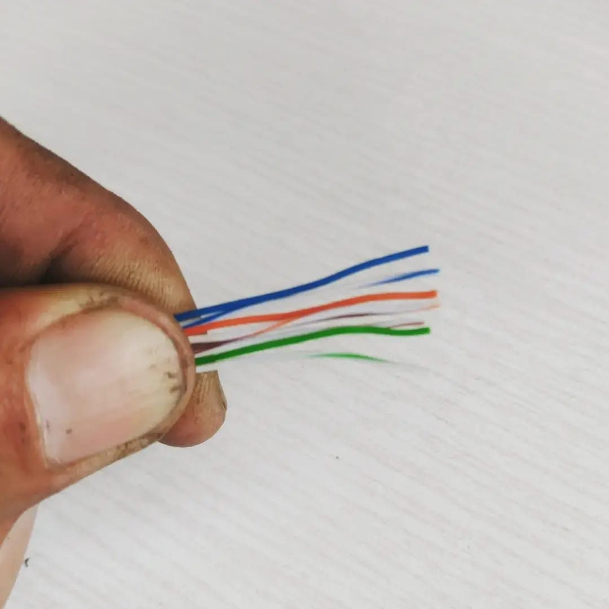
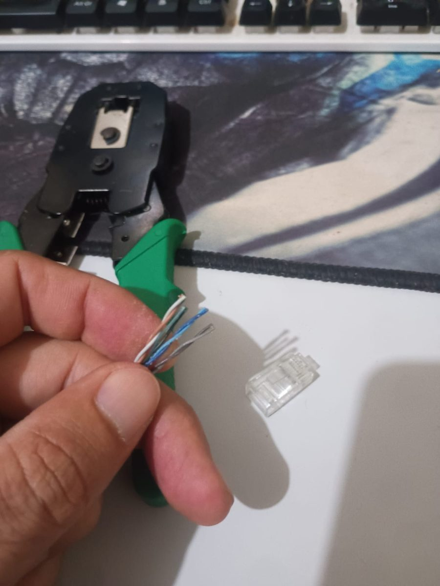
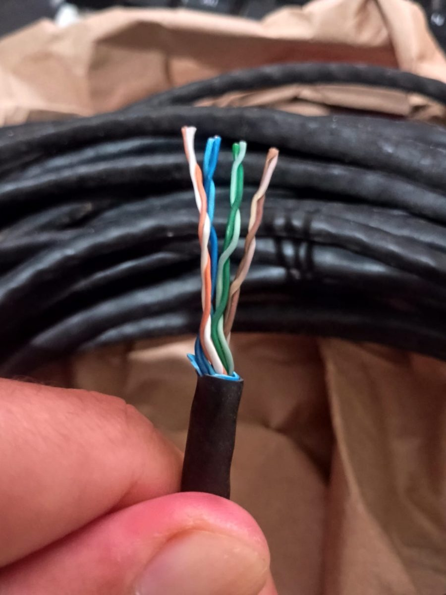
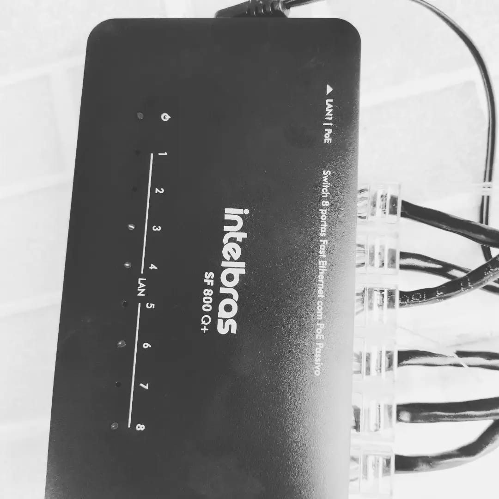
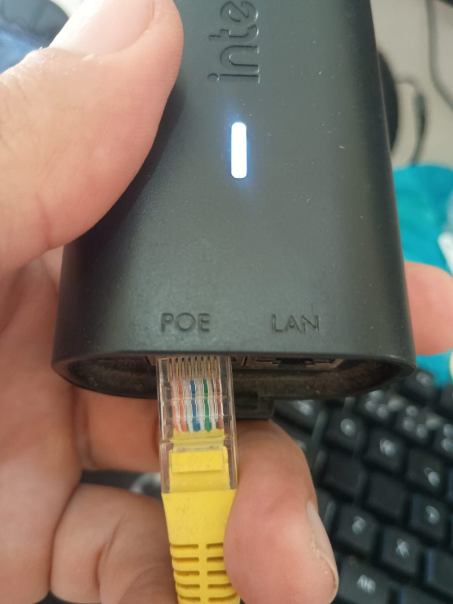
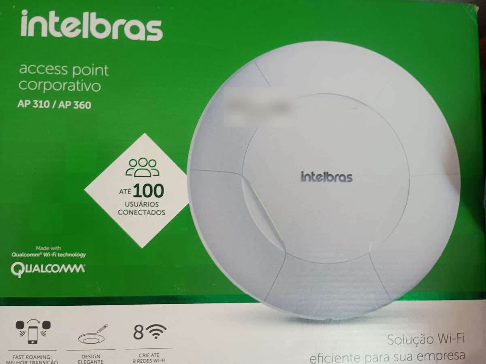
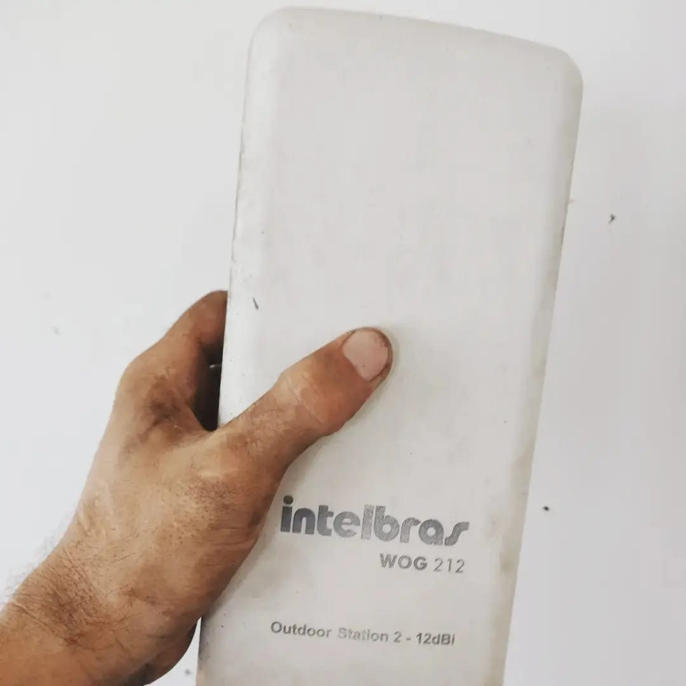
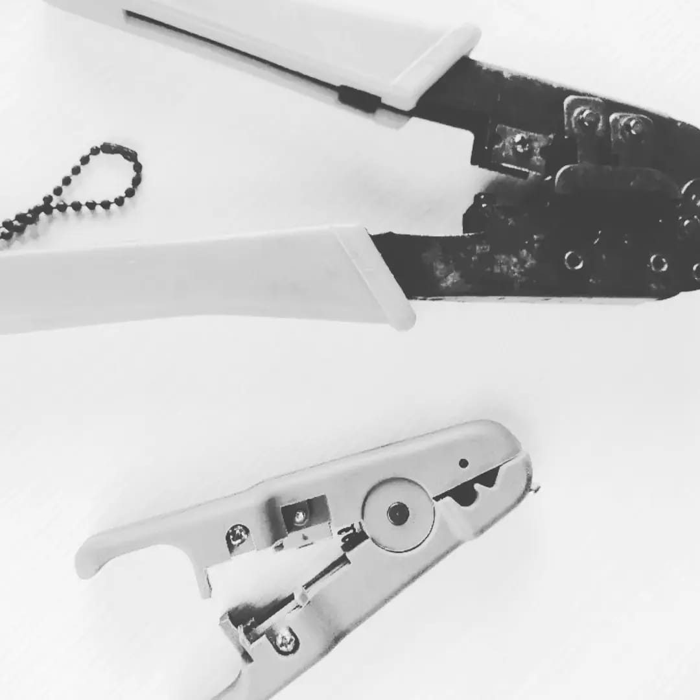

Case · Redes e Wi-Fi · 2024
Wi-Fi em todos os quartos de uma pousada
Uma pousada no interior de Sergipe tinha internet boa na recepção e sinal fraco nos quartos. A solução foi trocar a repetição de sinal pelo ar por uma rede estruturada: cabo, switch com PoE e pontos de acesso em cada área.
Problema
Sinal fraco e instável longe da recepção
Causa
Distância, paredes e repetição sem fio
Solução
Distribuição por cabo e pontos de acesso com PoE
Resultado
Cobertura nos quartos e no refeitório
A situação inicial
O roteador ficava na recepção, e os quartos ficavam em blocos afastados. Wi-Fi é onda de rádio: perde força com a distância e com cada parede que atravessa. O sinal até chegava, mas fraco demais para uma conexão estável.
A primeira tentativa foi usar um ponto de acesso Intelbras AP 360 repetindo o sinal pelo ar. A cobertura melhorou, mas a taxa de transferência caiu muito. Um repetidor sem fio usa o mesmo rádio para receber e para retransmitir, então divide o tempo entre as duas tarefas, e cada salto custa desempenho.
O diagnóstico, camada por camada
Olhando a rede pelas camadas do modelo TCP/IP, dá para separar onde o problema estava e onde não estava:
Trocar o plano de internet ou a configuração não resolveria. Era preciso mudar o caminho físico do sinal.
A solução: rede estruturada
A rede passou a seguir o modelo hierárquico usado em redes corporativas, com três camadas. Na borda, o roteador principal conecta a internet do provedor e distribui os endereços. Na distribuição, um switch com PoE leva a rede por cabo até cada área. No acesso, um ponto de acesso em cada bloco atende os hóspedes de perto.
Pelo cabo, cada ponto de acesso recebe a conexão sem a perda da repetição sem fio, e o rádio fica dedicado aos aparelhos que estão por perto.
O que foi feito
- LevantamentoOnde o sinal falhava, as distâncias entre os blocos e os caminhos possíveis para o cabo.
- CabeamentoCabo UTP para área externa do roteador principal até o ponto de distribuição e de lá até os pontos de acesso.
- ConectoresTroca dos conectores RJ45 oxidados pela umidade e nova crimpagem no padrão T568B.
- AlimentaçãoPontos de acesso alimentados por PoE passivo, pelo switch e por injetor.
- OrganizaçãoCabos e equipamentos arrumados para facilitar a manutenção.
Equipamentos
| Equipamento | Papel na rede |
|---|---|
| Roteador principal | Borda: conexão com o provedor, gateway e DHCP |
| Intelbras SF 800 Q+ | Distribuição: switch de 8 portas Fast Ethernet com PoE passivo |
| Intelbras AP 360 | Acesso: ponto de acesso corporativo nos blocos e no refeitório |
| Intelbras WOG 212 | Estação outdoor 2,4 GHz com antena de 12 dBi, para a área externa |
| Injetor PoE Intelbras | Alimentação de equipamento pelo cabo de rede |
| Cabo UTP para área externa e conectores RJ45 | Meio físico entre os equipamentos |
Boas práticas para uma rede assim
Um só DHCP
Só o roteador principal entrega endereços. Equipamentos intermediários ficam em modo ponto de acesso.
Mesmo nome, canais diferentes
Um único nome de rede em todos os pontos e canais que não se sobrepõem, como 1, 6 e 11 em 2,4 GHz.
Medir antes e depois
Testes com ping e iperf3 mostram onde está o gargalo e comprovam o resultado.
Fotos do trabalho









Sua empresa tem um canto onde o Wi-Fi não chega?
Conte como está a sua rede hoje. Eu respondo com o diagnóstico e os próximos passos.
Falar no WhatsApp Ver outros cases